| |
"Santos Profanos"
|
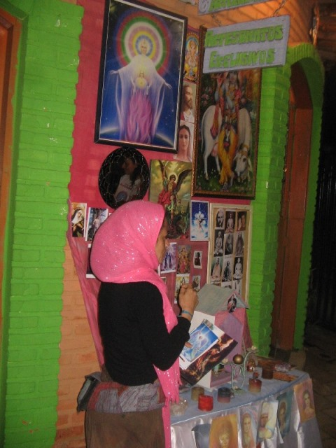
|
En 2006, en base al "Jogo das pedras", Juan propuso una
actividad para aglutinar y movilizar a toda la comunidad de Sao Thomé das
letras. La gente debía crear 64 altares en distintos puntos del pueblo,
cada uno dedicado a un santo, que podía ser conocido o imaginado por la propia
gente. Todos fueron involucrados: los maestros hablaron del tema con los
alumnos, se debatieron e inventaron santos profanos, se hicieron los altares.
Juan convocó a artistas plásticos de distintos puntos de Brasil para que
pintaran esos santos y se organizó una muestra en el centro de exposición de
la ciudad. La gente, adultos y niños, hicieron una procesión para visitar los
distintos altares y culminar su recorrido en la muestra, donde además hubo
música en vivo.
|
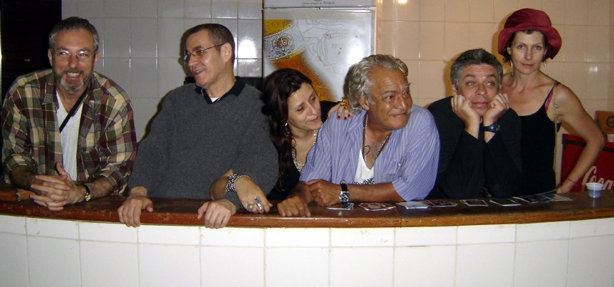 Juan con algunos de
los pintores.
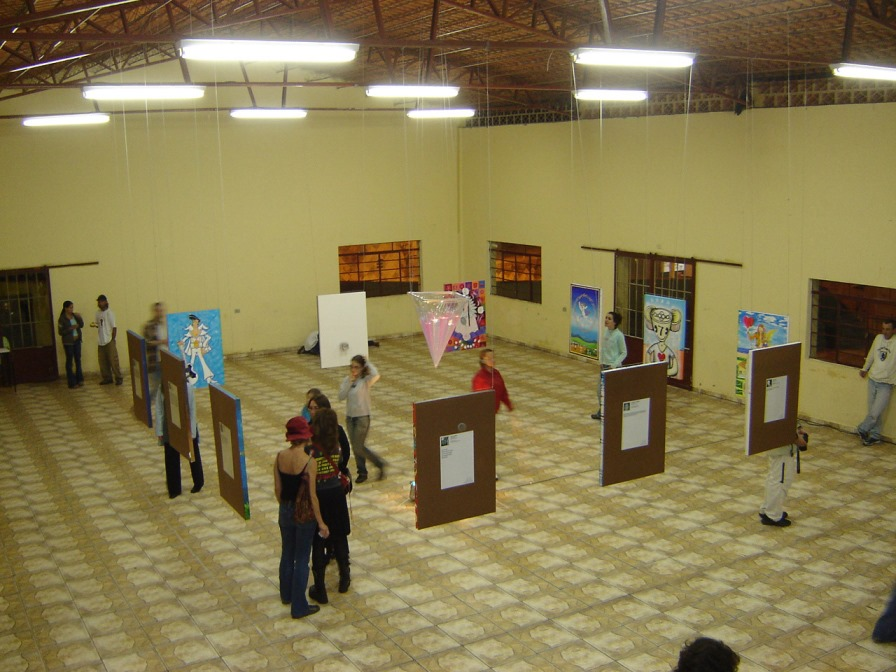 Preparando la exposición.
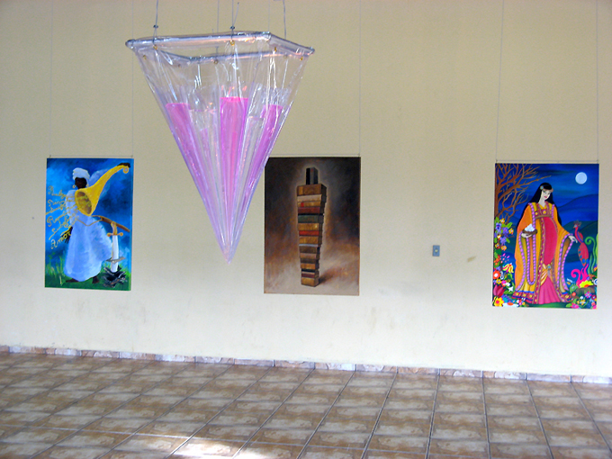
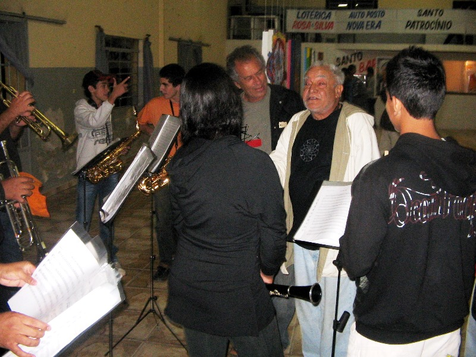 Juan y la orquesta
Algunos santos profanos
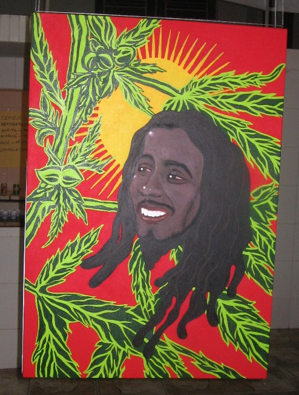
Sao Bob |
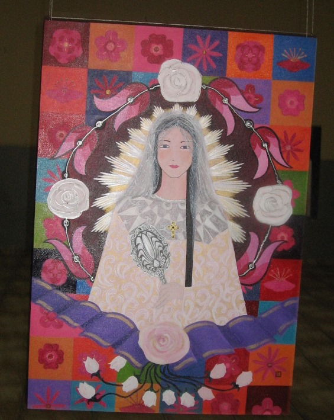
Santa Beleza
|
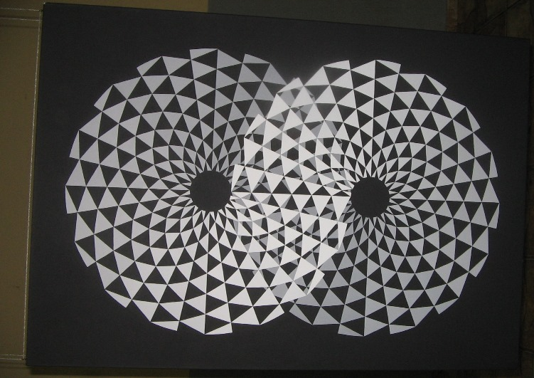
Santo Infinito |
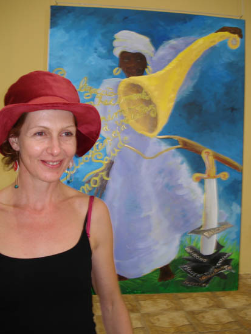
Santa Abundancia
|
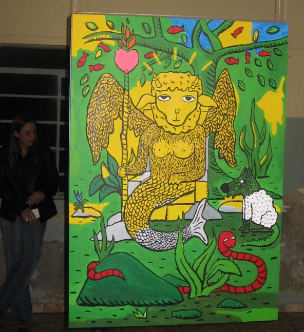
Santa Quimera |
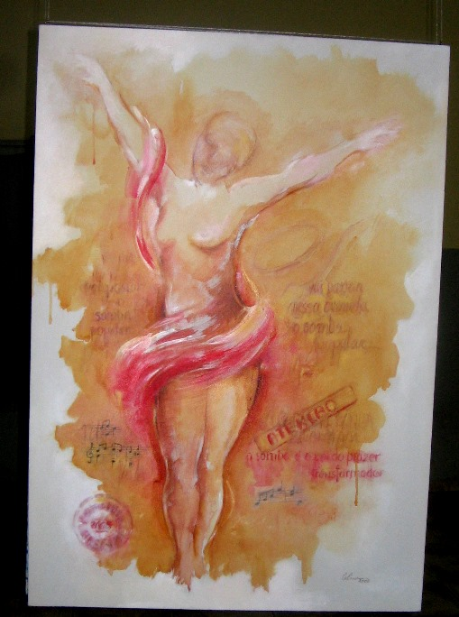
Santa Alegria do Samba
|
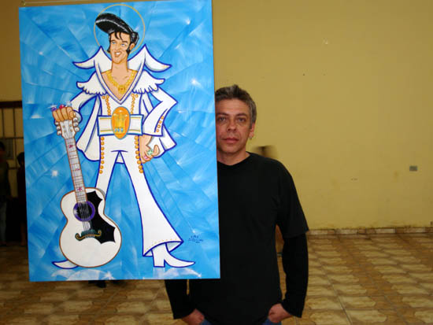
Sao Topelvis
|
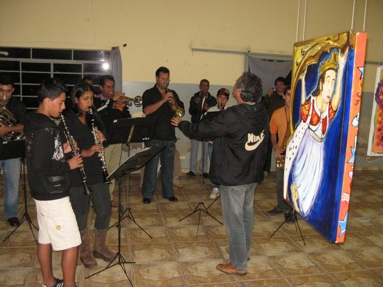
Santa Arquitetura
|
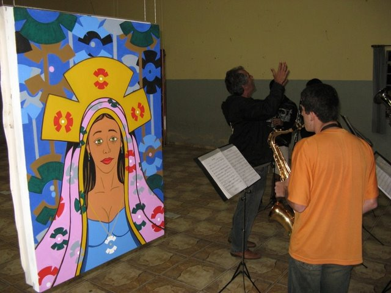
Santa Carnaúba
|
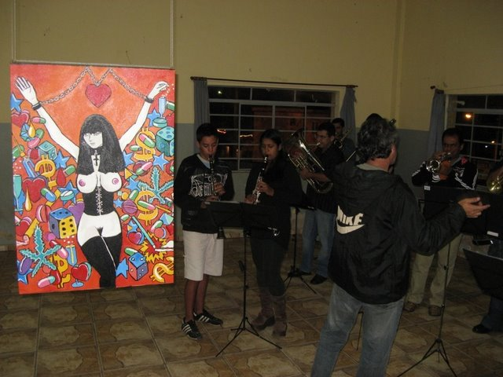
Santa Perversao
|
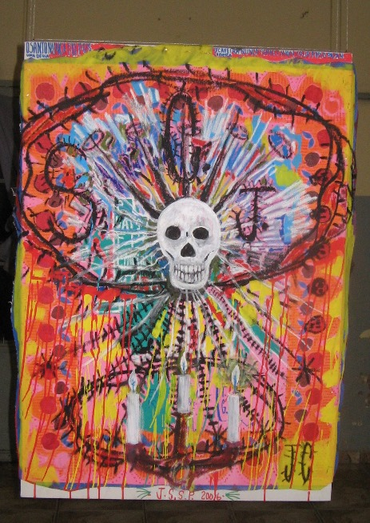
Santa Caveira
|
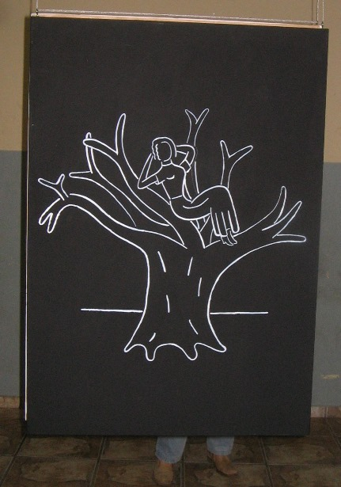
Santa Tranquilidade |
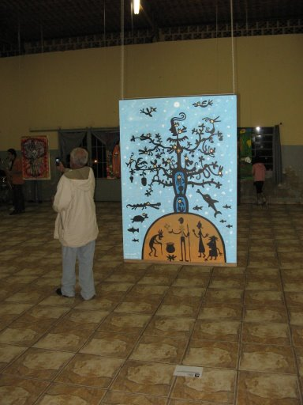
Santa Floresta |
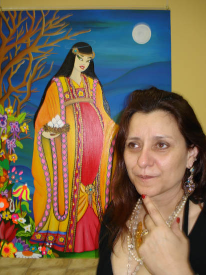
Santa Paciencia |
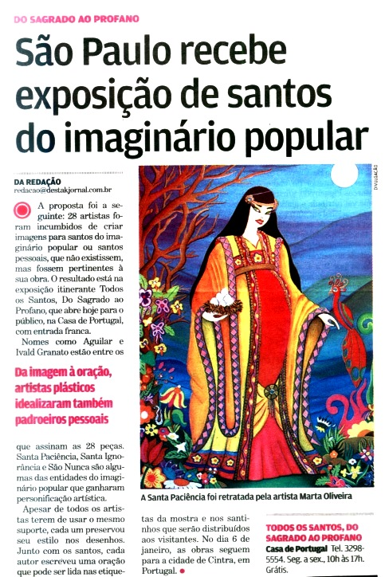 |
|
Después de esta experiencia, se imprimieron miles de estampitas con los
santos profanos y se hicieron muestras de las pinturas en otras ciudades del
país (incluyendo San Pablo) y de Portugal.
|

|